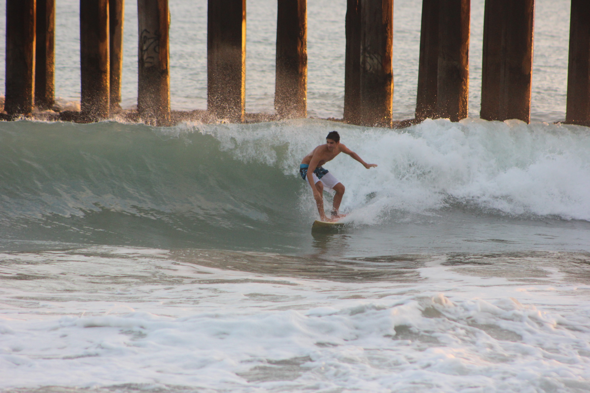
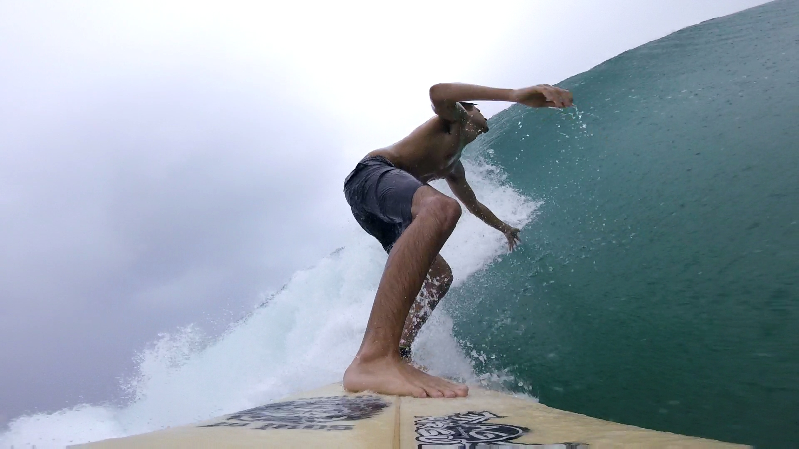
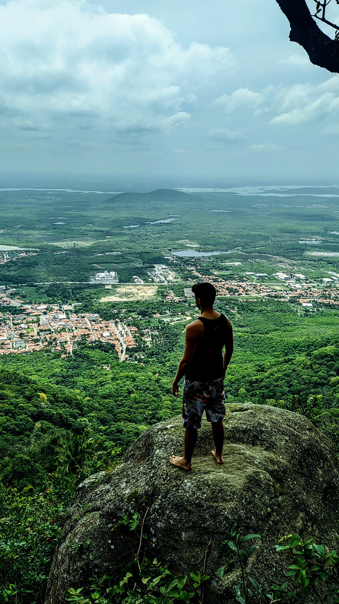
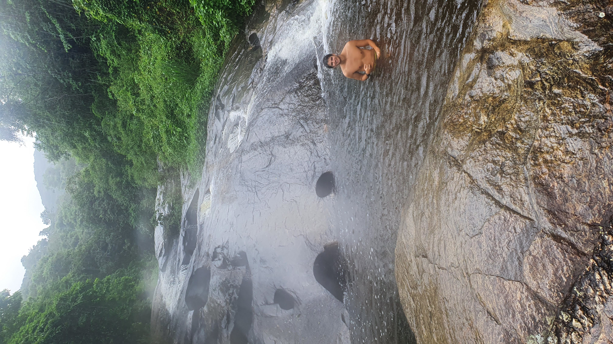
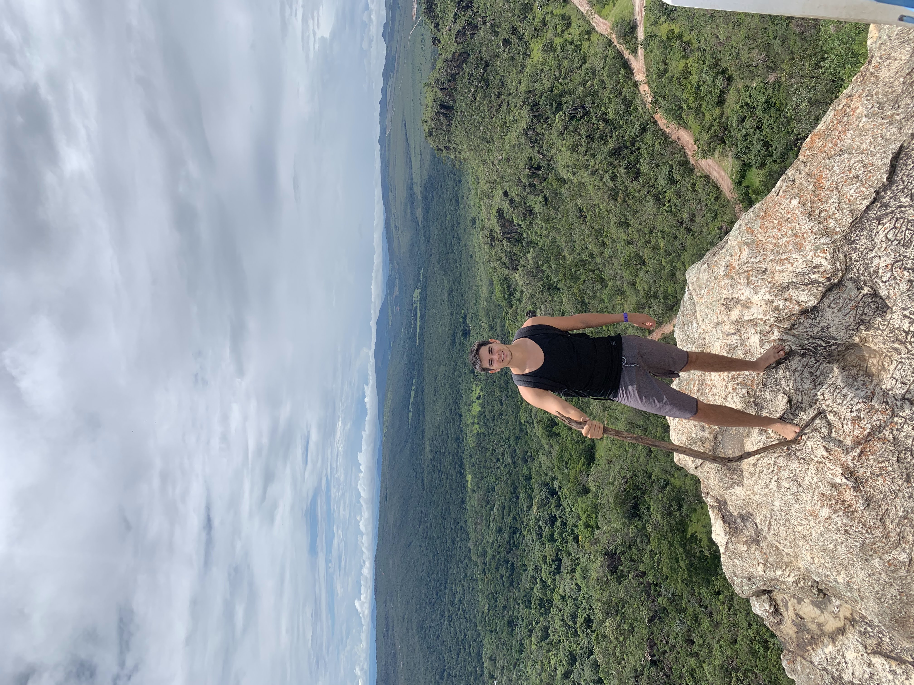
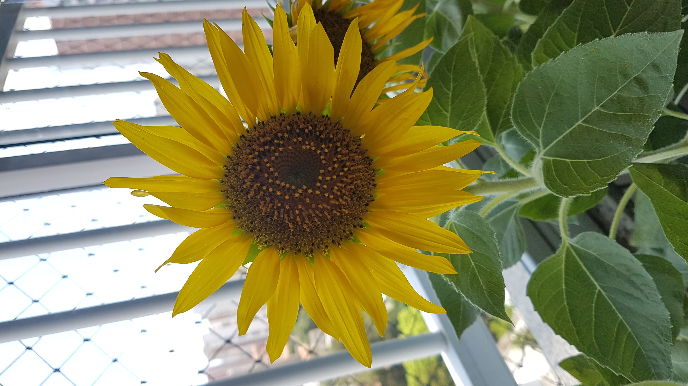
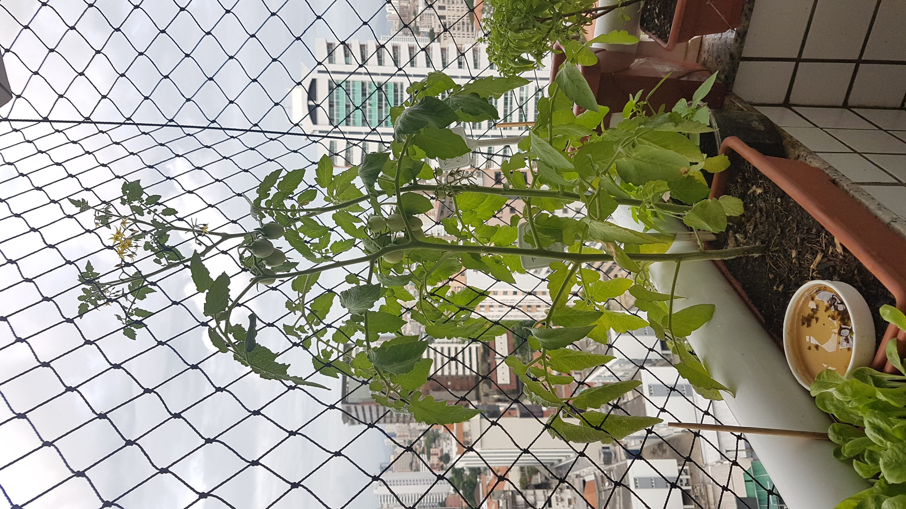
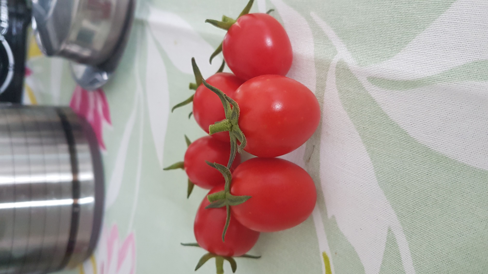

Hobbies
About
I enjoy doing different types of sports and outdoor activities that connect me with Nature. I don't intend on giving you a lengthy list, but I'm going to list a few of my favorite hobbies bellow:
- Surf: I feel free while I slide through waves and the contact with the sea relax my body and mind.


- Trekking: I like to do trekking to break the big city rhythm. That gives me an opportunity to change my perspective of view and see how raw Nature works and survives,without man intervention.



- Gardening: I enjoy to take care of plants, watch them grow and use it for cook.


